# tidyverse package contains most of what we need
library(tidyverse)
# let's also load patchwork to put plots together
library(patchwork)16 Workshop 5: Putting it all together
In this workshop we will combine our learning from the first 4 workshops to answer some more application-style questions about the mousezempic data.
TipLearning Objectives
At the end of this session, learners should be able to:
Describe the key steps in data analysis
Perform basic data analyses in R
Understand how to break up a written problem into steps that code can be written to solve
16.1 Introduction
For our analysis, we will use the dosage and genes data frames, which contain information about the mice treated with mousezempic and their gene expression levels, respectively.
The first thing we need to do is load the packages we’ll need for today:
And read in the two datasets:
# read in dosage data
dosage <- read_csv("data/mousezempic_dosage_data.csv")Rows: 344 Columns: 9
── Column specification ────────────────────────────────────────────────────────
Delimiter: ","
chr (4): mouse_strain, cage_number, replicate, sex
dbl (5): weight_lost_g, drug_dose_g, tail_length_mm, initial_weight_g, id_num
ℹ Use `spec()` to retrieve the full column specification for this data.
ℹ Specify the column types or set `show_col_types = FALSE` to quiet this message.# read in expression data
genes <- read_tsv("data/mousezempic_expression_data.tsv")Rows: 343 Columns: 11
── Column specification ────────────────────────────────────────────────────────
Delimiter: "\t"
chr (1): group
dbl (10): Th_rep1, Th_rep2, Th_rep3, Prlh_rep1, Prlh_rep2, Prlh_rep3, Hprt1_...
ℹ Use `spec()` to retrieve the full column specification for this data.
ℹ Specify the column types or set `show_col_types = FALSE` to quiet this message.
NoteHow do we read in data again?
Note that we used read_csv() for the mouse dosage data and read_tsv() for the expression data. We chose these functions to match the file extensions of the two datasets, as described when we first learned about reading in data in session 1 (see Section 7.1.1).
16.1.1 Today’s research questions
In today’s session, we will use the dosage and genes datasets to explore the following questions:
- Does the amount of weight lost by mice increase as dosage of mousezempic increases? Is this relationship affected by the mouse strain or sex?
- How does mousezempic affect the expression of the TH and PRLH genes? Is the expression of either of these genes correlated with the amount of weight mice lose?
Of course, there are countless questions we could ask of our data! In the interest of time, we will stick to these two key analyses but various others are explored in the practice questions at the end of this session’s notes.
16.2 Data wrangling
Recall back to workshop 3, where we learnt how to clean/wrangle data to make it tidy (see Chapter 10).
Take a look at the genes data: do you think it is tidy? If not, what might we need to do to tidy it up? Take a moment to do this, and then check below to see how I wrangled this data frame:
Solution
First, I need to pivot it into a longer format, using the pivot_longer() function, as the way the replicates and gene names are stored in the columns currently is not tidy:
genes_long <- genes %>%
pivot_longer(
cols = contains("_rep"),
names_to = "measurement",
values_to = "expression"
)Then, I need to separate the measurement column into separate columns for the replicates and gene names:
genes_tidy <- genes_long %>%
separate(
measurement,
into = c("gene", "replicate"),
sep = "_")16.3 The process of data analysis
With all that data wrangling out of the way, we can finally move on to doing some analysis to answer our research questions! But wait— how do you actually do data analysis? Where should you start?
Well, the creators of the tidyverse packages we use in this course have proposed the following ‘process of data science’:

In fact, we’ve already done the first two steps: reading in our data and tidying it up! The main portion of the analysis however is depicted as a cycle: transforming your data with the dplyr functions we learned in Chapter 7, visualising it with the ggplot2 functions we learned in Chapter 10, modelling it (with statistics, which we don’t cover in this course as they’re quite field-specific) and repeating. This process of iterating over many different research/analysis questions to develop a deeper understanding of your data allows you to really explore every aspect. Finally, you need to be able to clearly communicate the results of your analysis and interpret them in the biological context!
As we go through the research questions in the rest of this session, keep these steps in mind and try to think about how you could communicate the results.
16.4 Question 1: The relationship between dosage and weight loss
Let’s start by tackling the first part of our first research question: Does the amount of weight lost by mice increase as dosage of mousezempic increases?
Luckily, our dosage data was pretty tidy already so we didn’t have to do much cleaning. To begin our analysis process, let’s try investigating the relationship between these variables with visualisation. As both the dosage and weight loss variables are continuous, we can represent them on a scatterplot using geom_point()
ggplot(dosage, aes(x = drug_dose_g, y = weight_lost_g)) +
geom_point()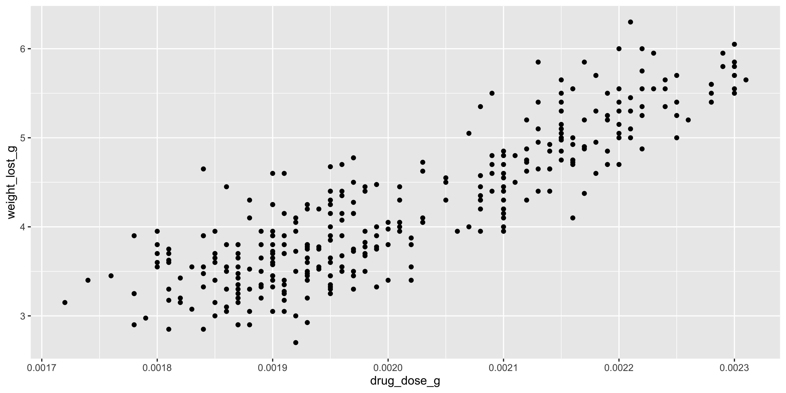
We can clearly see a positive linear relationship between drug dosage and weight lost.
However, this plot certainly isn’t publication ready! Practice the R skills you have learned throughout the course so far and try to improve the look of the plot by working through the exercises below ⬇️
ImportantPractice exercise: changing the x axis
For starters, it would probably make more sense to display the drug doses in milligrams rather than in grams, given that the values are so small. Take a moment to think about how you might achieve this using the dplyr functions we learned in session 2, and then check your answer below.
Solution
To convert g to mg we need to multiply by 1000. So, we need some kind of function that allows us to take the existing drug_dose_g column and multiply it by 1000 to create a new column that we can use for our plotting.
1. Use the mutate() function to create a new column in the dosage data frame called (for example) drug_dose_mg
2. Either save the modified dosage data frame as a variable in R, or pipe it directly into the ggplot function call
3. Make the ggplot as before
Learning how to break a problem down into simple steps is a crucial skill to learn for data analysis! Even if there are some steps that you don’t immediately know how to solve with code, it gives you a good starting point for your googling or to ask ChatGPT.
Now, try to convert these steps into code and create a plot where the x axis displays the drug dose in mg, like this one:
Warning: Removed 2 rows containing missing values or values outside the scale range
(`geom_point()`).Solution
Following the steps outlined above, here are two example code chunks that will make the correct plot. There are of course many more ways to approach the problem, so it’s ok if your solution doesn’t match perfectly!
This first solution saves the modified dosage data as a new data frame, which could be useful if you want to use the drug_dose_mg column in other plots or calculations:
# step two: save the modified version of dosage as its own
dosage_mg <- dosage %>%
# step one: use mutate to create drug_dose_mg column
mutate(drug_dose_mg = drug_dose_g * 1000)
# step three: plot same as before
ggplot(dosage_mg, aes(x = drug_dose_mg, y = weight_lost_g)) +
geom_point()The second one instead pipes this data frame directly from the mutate() function call straight into the ggplot() function. This approach is convenient when the data manipulation you’re doing (in this case adding the drug_dose_mg column) is only for a specific plot, so you don’t clutter up your environment panel:
dosage %>%
# step one: use mutate to create drug_dose_mg column
mutate(drug_dose_mg = drug_dose_g * 1000) %>%
# step two: pipe directly into the ggplot() function
# note that because the pipe passes our modified dosage data in as the first argument,
# we don't need to specify the data frame we are plotting, just the aes()
ggplot(aes(x = drug_dose_mg, y = weight_lost_g)) +
# step three: plot same as before
geom_point()Now our x axis is much easier to read!
Still, there are a few things we could do to make our plot look a bit better. In the next set of practice problems, we will use our ggplot2 knowledge to improve the plot visually:
ImportantPractice exercise: making visual improvements
Take a moment to look at the plot and think of what you could change to make it more informative and visually appealing. Of course this is subjective, but some suggestions are provided below.
Solution
1. The plot could do with some nicely formatted labels on the x and y axes, as well as a title.
2. Some of the points on the plot are overlapping, so it could be helpful to change the points from filled circles to unfilled circles so they don’t all just merge into a blob.
3. This is a matter of personal taste, but I think the default ggplot2 grey background is kind of basic so I always change it 😝
Here’s my plot. Click below to see the R code that made it:
Show the R code
# see the previous practice q for the explanation of this
# dplyr code to create the mg column
dosage %>%
mutate(drug_dose_mg = drug_dose_g * 1000) %>%
# create the plot
ggplot(aes(x = drug_dose_mg, y = weight_lost_g)) +
# change the points to unfilled circles
# note that we don't need to put it in aes() because
# it isn't tied to a particular variable
# also increasing the stroke (width of the circle line) to 0.75
# so the points stand out more
geom_point(shape = 1, stroke = 0.75) +
# add axis labels and title
labs(title = "Association between drug dosage and weight lost",
x = "Drug dosage (mg)",
y = "Weight lost (g)") +
# change the theme
theme_minimal()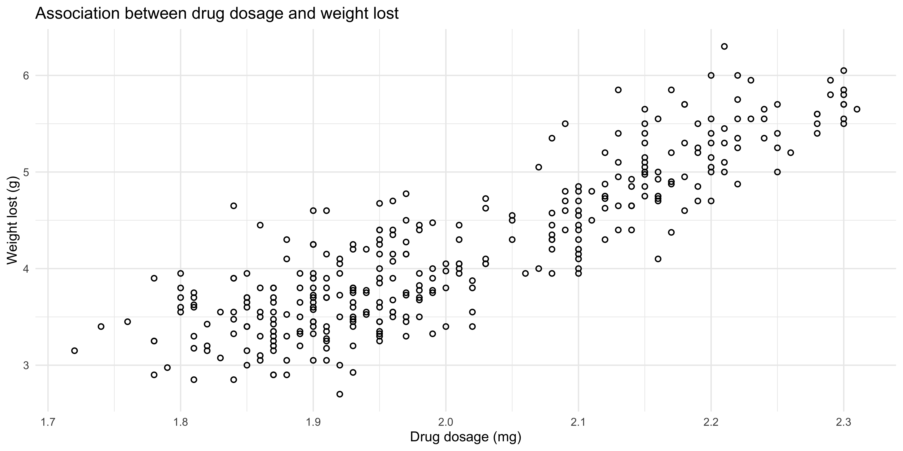
16.4.1 The effect of strain and sex
The final part of the research question was to investigate whether mouse strain or sex has any effect on this relationship. In workshop 3 (Chapter 10), we learned how to use the summarise() and pivot_wider() functions to create a contingency table that counts up how many mice fall into each of the mouse strain/sex combinations. This is an important first step for the analysis, as it allows us to double check that there isn’t a category with so few mice that would prevent us from drawing reliable conclusions.
dosage %>%
summarise(n_mice = n(), .by = c(mouse_strain, sex)) %>%
pivot_wider(names_from = mouse_strain, values_from = n_mice)# A tibble: 3 × 4
sex `CD-1` `Black 6` `BALB C`
<chr> <int> <int> <int>
1 male 73 61 34
2 female 73 58 34
3 <NA> 6 5 NAGiven that there are >30 mice in each category, we can proceed with the analysis.
ImportantPractice exercise: adding in extra information
Now, let’s try adding the mouse strain and sex information to the scatterplot we created above. Try to think about what aesthetics would be good to use to show those two variables.
Solution
# see the previous practice q for the explanation of this
# dplyr code to create the mg column
dosage %>%
mutate(drug_dose_mg = drug_dose_g * 1000) %>%
# create the plot
ggplot(aes(x = drug_dose_mg, y = weight_lost_g, colour = mouse_strain, shape = sex)) +
geom_point() +
# add axis labels and title
labs(title = "Association between drug dosage and weight lost",
x = "Drug dosage (mg)",
y = "Weight lost (g)",
# adding nicer labels to the legend
# you just use the aesthetic name
colour = "Mouse strain",
shape = "Sex") +
# change the theme
theme_minimal()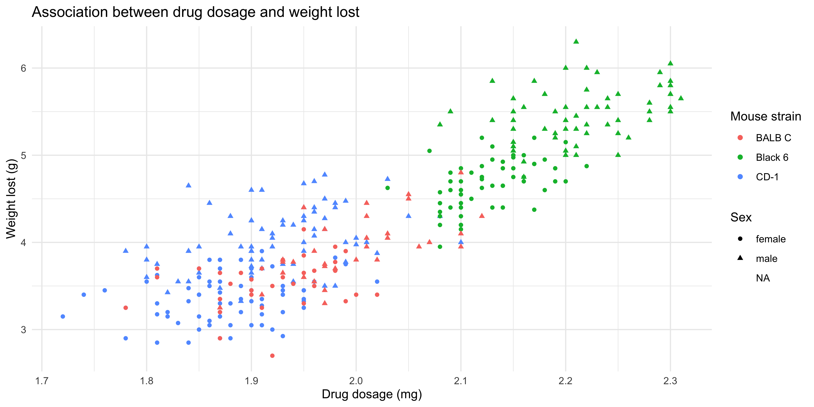
Note that:
It’s up to you which aesthetics should represent each variable, but in this example the
colouraesthetic was chosen for the mouse strains because there are more strains than sexes, and it’s easier to distinguish between different colours than different shapesWe used the
labs()function to change the legend labels for our mouse strain and sex variables. It just gives a nice professional touch to the plot
Our plot reveals that Black 6 mice received higher drug dosages than the other mice, and also lost more weight. This shows us why it’s so important to explore the relationships between lots of different variables in large datasets. Imagine if we had just plotted the weight loss for mice of each strain:
ggplot(dosage, aes(x = mouse_strain, y = weight_lost_g)) +
geom_boxplot() +
theme_minimal()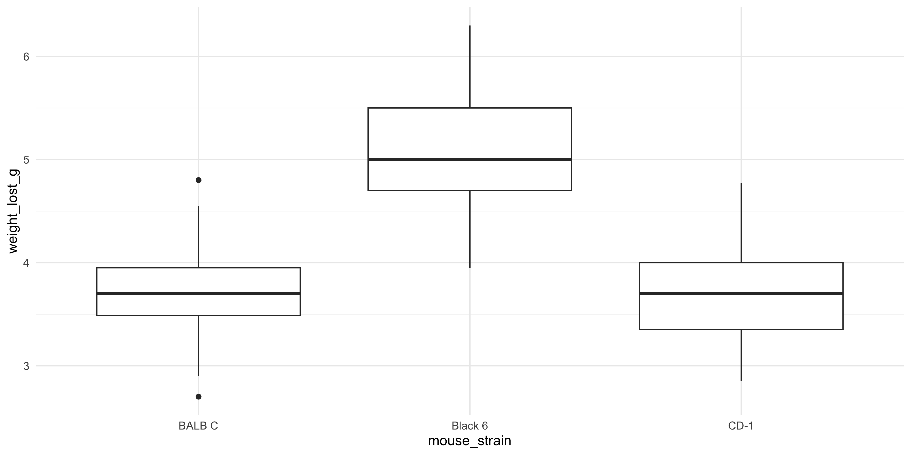
We might think that the drug is more effective on Black 6 mice, because they lost more weight, but our scatterplot above shows it’s more likely to be due to their higher dosage.
Always try to look at all the variables you have, because you never know what associations you might find!
16.5 Question 2: The effect of mousezempic on gene expression
Our second research question was about the effect of mousezempic on the expression of the TH and PRLH genes. To answer this question, we can use the genes_tidy dataset that we prepared earlier, by pivoting the genes dataset to be longer and separating the measurement column so each variable is contained within its own column.
Let’s take a look at the genes_tidy data to remind ourselves of the information it contains. You might like to use the View() function, or just type the name of the data like so:
genes_tidy# A tibble: 3,087 × 5
group id_num gene replicate expression
<chr> <dbl> <chr> <chr> <dbl>
1 grp_treatment 1 Th rep1 3239.
2 grp_treatment 1 Th rep2 5964.
3 grp_treatment 1 Th rep3 4123.
4 grp_treatment 1 Prlh rep1 225.
5 grp_treatment 1 Prlh rep2 359.
6 grp_treatment 1 Prlh rep3 314.
7 grp_treatment 1 Hprt1 rep1 858.
8 grp_treatment 1 Hprt1 rep2 1292.
9 grp_treatment 1 Hprt1 rep3 988.
10 grp_treatment 2 Th rep1 2665.
# ℹ 3,077 more rowsEach mouse has a unique id_num, and belongs to a group (either treatment or control). There are also gene expression measurements in triplicate for each of three different genes: the TH and PRLH genes we are interested in and HPRT1, a housekeeping gene.
16.5.1 Do the treatment and control groups differ?
To investigate differences in gene expression between the treatment an control groups, a good first step would be to make a plot. Boxplots, violin plots or beeswarm plots would be a good choice to visualise this type of data.
ImportantPractice exercise: plotting the relationship between mousezempic and gene expression
Take a moment to think about how you could achieve this, and check your answer below. As an additional exercise, how could you prevent the HPRT1 gene from being shown on your plot?
Solution
Since we want to plot the expression of two different genes, we have a couple of options.
Firstly, we could use a single ggplot() function call, and facet the plot by the gene. However, if we want to exlude the HPRT1 gene, we’ll have to first use the filter() function from dplyr to remove it from our data frame.
genes_tidy %>%
# remember that != is the test for inequality in R
# also note we use Hprt1 not HPRT1: needs to match
# the data frame exactly for filter() to work
filter(gene != "Hprt1") %>%
# we will pipe this filtered data into the ggplot
# because we are unlikely to want to re-use it
ggplot(aes(x = group, y = expression)) +
geom_boxplot() +
# to facet write ~ then the name of the column
# need scales = "free" because otherwise it will
# use the same scales for both genes, and the
# expression levels are quite different
facet_wrap(~ gene, scales = "free") +
theme_bw()
Another option would be to plot each of TH and PRLH separately, with two different ggplot() function calls and then combine them with patchwork (make sure this package is loaded!). To do this, we would also have to use the filter() function, this time to filter to just the rows that contain the gene we want to plot
# first plot: TH
th_plot <- genes_tidy %>%
# == tests for equality in R
filter(gene == "Th") %>%
ggplot(aes(x = group, y = expression)) +
geom_boxplot() +
# should add a title to remind us which one this is
labs(title = "TH gene expression in control vs treatment groups") +
theme_bw()
# second plot: PRLH
prlh_plot <- genes_tidy %>%
# == tests for equality in R
filter(gene == "Prlh") %>%
ggplot(aes(x = group, y = expression)) +
geom_boxplot() +
# should add a title to remind us which one this is
labs(
title = "PRLH gene expression in control vs treatment groups") +
theme_bw()
# combine them using patchwork + syntax
th_plot + prlh_plot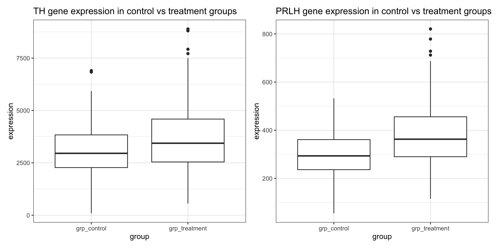
The first method with faceting requires less code, but the second method of making two separate plots that are combined with patchwork allows you to be more flexible with the layout and include extra plots in the figure if desired.
But either solution is perfectly valid, and allows us to see that the expression of the Th and Prlh genes is higher in the treatment group than in the control group.
R also provides a range of functions that we could use to formally test the relationship between these variables, although they are out of the scope of this course. A helpful guide on performing statistical tests in R can be found here.
16.5.2 An aside: string manipulation
Let’s now take a moment to improve the appearance of our plot from the exercise above:
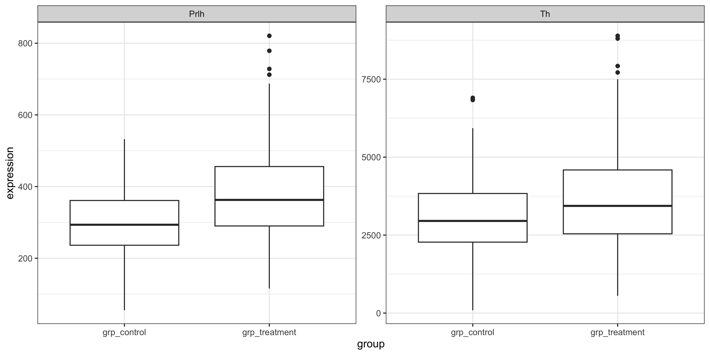
In session three we learned how to change the x and y axis labels on our graph to be more informative, but how can we change the values on the axes themselves? Currently, we have ‘grp_control’ and ‘grp_treatment’, but to make the plot look more publication-ready, it would be nice if it could just say ‘Control’ and ‘Treatment’.
We can do this with the help of the stringr tidyverse package, which contains a set of functions to manipulate string (character) data in R. Being able to programatically manipulate strings is an essential tool for dealing with real-world data, particularly when you need to extract sample information from names or (as in our case) remove irrelevant characters that only take up space on plots.
Some useful functions for string manipulation include:
str_replace(string, pattern, replacement): replaces thepatternin thestringwith thereplacementstr_extract(string, pattern): extracts the part of thestringmatching thepatternstr_remove(string, pattern): removes the part of thestringmatching thepattern
The full list of functions can be found in the stringr package documentation.
NoteUsing stringr functions on a data frame
Remember from session 2 that when we use the pipe operator %>%, it passes whatever precedes it into the function after it as the first argument. This means that the functions we use within a chain of pipes on a data frame should (generally) have a data frame as their input, and return a data frame as their output.
But stringr functions operate on character vectors (their first argument is string, as shown above), so how can we use them on our data frames? The answer is to wrap it in the mutate() function from the dplyr package, which allows us to either edit an exisiting column or create a new one based on our string manipulation.
For example, let’s say we want to change the replicate column in our genes_tidy data frame to read ‘Replicate 1’, ‘Replicate 2’, etc instead of ‘rep1’, ‘rep2’. We would do this by using the str_replace() function inside the mutate() function like so:
genes_tidy %>%
mutate(replicate = str_replace(replicate, "rep", "Replicate "))# A tibble: 3,087 × 5
group id_num gene replicate expression
<chr> <dbl> <chr> <chr> <dbl>
1 grp_treatment 1 Th Replicate 1 3239.
2 grp_treatment 1 Th Replicate 2 5964.
3 grp_treatment 1 Th Replicate 3 4123.
4 grp_treatment 1 Prlh Replicate 1 225.
5 grp_treatment 1 Prlh Replicate 2 359.
6 grp_treatment 1 Prlh Replicate 3 314.
7 grp_treatment 1 Hprt1 Replicate 1 858.
8 grp_treatment 1 Hprt1 Replicate 2 1292.
9 grp_treatment 1 Hprt1 Replicate 3 988.
10 grp_treatment 2 Th Replicate 1 2665.
# ℹ 3,077 more rowsThis applies to lots of other functions, not just the ones from the stringr package— if you want to use a function that takes a vector as input on a column of a data frame, wrap it in the mutate() function first!
‘Patterns’ are what the stringr package will look for in your string. For example, in this case, our pattern could be grp_ because this is what we want to remove from the strings in our ‘group’ column. This is an example of a fixed pattern, where you specify exactly what string you want to find. There is also another way to write patterns, called regular expressions which allow you to, for example, remove everything before the first underscore or all numbers. These are extremely powerful, but can get a little confusing so you might like to get help from AI to write them.
ImportantCleaning up the text on our plot
Using the stringr package, remove the ‘grp_’ from the x axis labels, and then use ggplot2 functions to add other labels to the plot. Here’s an example of what this might look like:
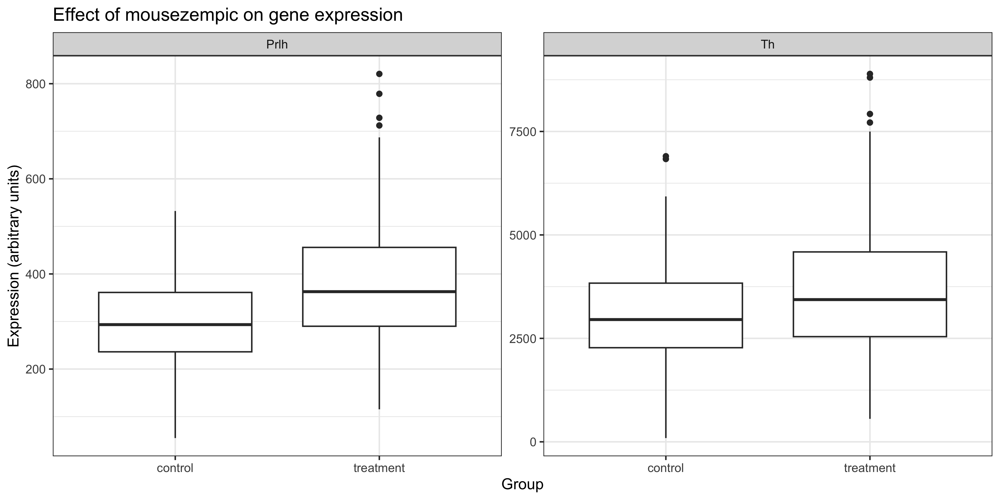
Solution
The code that generates the plot above is:
genes_tidy %>%
# use str_remove function to remove 'grp_' from the
# beginning of the group column. need to wrap it in
# the mutate function because we are working on a
# column in a data frame not just on a vector
mutate(group = str_remove(group, "grp_")) %>%
filter(gene != "Hprt1") %>%
ggplot(aes(x = group, y = expression)) +
geom_boxplot() +
facet_wrap(~ gene, scales = "free") +
theme_bw() +
# add the other labels
labs(
title = "Effect of mousezempic on gene expression",
x = "Group",
y = "Expression (arbitrary units)")16.5.3 The relationship between gene expression and weight loss
The second part of research question 2 asked us to look at whether TH and/or PRLH expression is associated with the amount of weight lost by mice taking mousezempic. To do this, we will need to join the dosage and genes_tidy data frames:
combined_data <- left_join(
genes_tidy, # the left data frame
dosage, # the right data frame
by = "id_num") # name of the column to join by
combined_data# A tibble: 3,087 × 13
group id_num gene replicate.x expression mouse_strain cage_number
<chr> <dbl> <chr> <chr> <dbl> <chr> <chr>
1 grp_treatment 1 Th rep1 3239. CD-1 1A
2 grp_treatment 1 Th rep2 5964. CD-1 1A
3 grp_treatment 1 Th rep3 4123. CD-1 1A
4 grp_treatment 1 Prlh rep1 225. CD-1 1A
5 grp_treatment 1 Prlh rep2 359. CD-1 1A
6 grp_treatment 1 Prlh rep3 314. CD-1 1A
7 grp_treatment 1 Hprt1 rep1 858. CD-1 1A
8 grp_treatment 1 Hprt1 rep2 1292. CD-1 1A
9 grp_treatment 1 Hprt1 rep3 988. CD-1 1A
10 grp_treatment 2 Th rep1 2665. CD-1 1A
# ℹ 3,077 more rows
# ℹ 6 more variables: weight_lost_g <dbl>, replicate.y <chr>, sex <chr>,
# drug_dose_g <dbl>, tail_length_mm <dbl>, initial_weight_g <dbl>
ImportantPlotting the relationship between gene expression and weight loss
Use the combined_data data frame and your choice of ggplot2 functions to see whether there is a relationship between the expression of the TH & PRLH genes and weight lost by mice.
Solution
Since both variables are continuous, a scatterplot is a good choice to visualise their relationship. Here is some sample code:
# first plot: TH
th_plot <- combined_data %>%
# == tests for equality in R
filter(gene == "Th") %>%
ggplot(aes(x = expression, y = weight_lost_g)) +
geom_point() +
labs(
x = "TH gene expression (arbitrary units)",
y = "Weight loss (g)") +
theme_minimal()
# second plot: PRLH
prlh_plot <- combined_data %>%
filter(gene == "Prlh") %>%
ggplot(aes(x = expression, y = weight_lost_g)) +
geom_point() +
labs(
x = "PRLH gene expression (arbitrary units)",
y = "Weight loss (g)") +
theme_minimal()
# combine them using patchwork + syntax
th_plot + prlh_plotWarning: Removed 6 rows containing missing values or values outside the scale range
(`geom_point()`).
Removed 6 rows containing missing values or values outside the scale range
(`geom_point()`).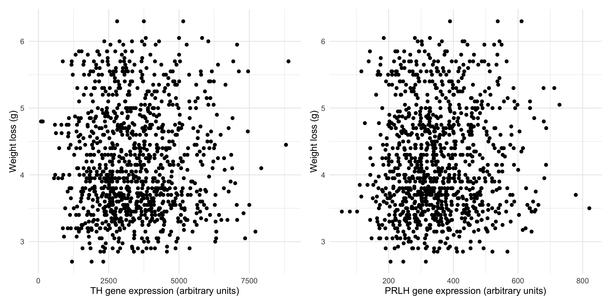
We can se there is no association between the expression of TH and weight lost, and the same is true for PRLH expression and weight lost. This probably makes sense, as there are many complex regulatory pathways involved in hunger.
16.6 Summary
Today, we’ve tried to put together all of the skills we’ve learned in this R course and use them to address some sample data analysis questions. We’ve covered:
How to break down a written research question into steps we can write code to solve
The ‘stringr’ package for string manipulation, and some of the basic ways we can use it to clean up character columns in our data frames
The overall process of data science, and how to apply it in practice to break down our research questions into a series of steps/function calls in R
Of course, a real data analysis will likely be much longer and more complex than the toy examples we have tackled today. However, we hope that it has provided you with a basic, yet versatile toolkit for transforming the messy data you will find in the wild into a neat, tidy format that you can use to explore your research questions and produce gorgeous data visualisations.
16.6.1 Practice questions
If you have time, try having a go at addressing these additional research questions that extend those covered in the main body of the session. There are many different ways to approach them, so don’t worry if yours doesn’t match exactly with the solutions.
16.6.1.1 Practice question 1: Looking more deeply into weight loss
In our first research question, we investigated the relationship between the dosage of mousezempic and the amount of weight (in g) lost by each mouse. But, is there a better way to measure weight loss than just the number of grams lost?
To start examining this, it would be helpful to know the distribution of the mices’ initial weights.
ImportantHow much do the mice weigh before taking mousezempic?
We can examine this numerically and visually. First practice your dplyr skills and use the summarise() function to calculate some sensisble summary statistics
Solution
You can achieve this using the summarise() function without grouping, as shown below. Notice that we filter out NAs in this column first with filter(), because otherwise we’d have to set na.rm = TRUE for each of the summary statistic function calls, which would be annoying:
dosage %>%
# first remove NAs in the initial_weight_g column
filter(!is.na(initial_weight_g)) %>%
# then calculate summary statistics
summarise(
min_iw = min(initial_weight_g),
max_iw = max(initial_weight_g),
av_iw = mean(initial_weight_g),
sd_iw = sd(initial_weight_g),
med_iw = median(initial_weight_g))# A tibble: 1 × 5
min_iw max_iw av_iw sd_iw med_iw
<dbl> <dbl> <dbl> <dbl> <dbl>
1 32.1 59.6 43.9 5.46 44.4This is a nice way to practice your dplyr skills, but in reality, it’s probably easier to use the summary() function that’s built into R. Note that this function operates on a vector, so you need to access the initial_weight_g column as a vector first by either using pull() or the $ syntax we covered in session 1.
# using pull():
dosage %>% pull(initial_weight_g) %>% summary() Min. 1st Qu. Median Mean 3rd Qu. Max. NAs
32.10 39.23 44.45 43.92 48.50 59.60 2 # using $
summary(dosage$initial_weight_g) Min. 1st Qu. Median Mean 3rd Qu. Max. NAs
32.10 39.23 44.45 43.92 48.50 59.60 2 Next, let’s look at this visualling by making a histogram of the initial mice weights:
Solution
To make a histogram with ggplot2, we can use the geom_histogram() function:
ggplot(dosage, aes(x = initial_weight_g)) +
geom_histogram()`stat_bin()` using `bins = 30`. Pick better value `binwidth`.Warning: Removed 2 rows containing non-finite outside the scale range
(`stat_bin()`).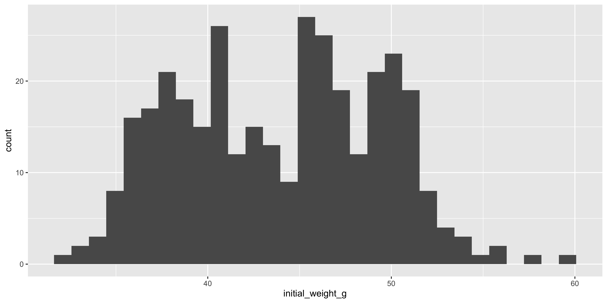
Since this plot is kind of ugly, let’s make some cosmetic changes (optional):
ggplot(dosage, aes(x = initial_weight_g)) +
geom_histogram(fill = "plum", colour = "white") +
theme_bw()`stat_bin()` using `bins = 30`. Pick better value `binwidth`.Warning: Removed 2 rows containing non-finite outside the scale range
(`stat_bin()`).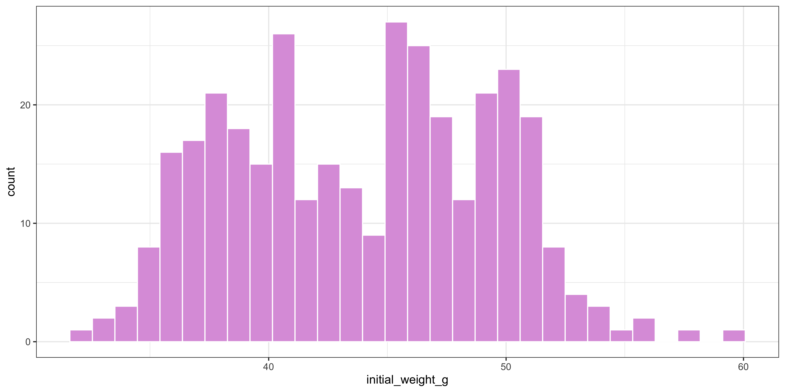
Looking at these results, it seems like there is a fairly wide spread of initial weights of the mice. So, could this be affecting our interpretation of the results?
It stands to reason that mice that weigh more initially would probably be able to lose more weight once they start taking mousezempic. So, what if we expressed weight loss as a percentage of the initial body weight, rather than just in grams?
ImportantExpressing weight lost as a percentage
Use the mutate() function to add a column to the dosage data frame expressing the weight lost as a percentage of the initial weight. Then, plot the relationship between the drug dosage and percentage weight lost (coloured by mouse strain) as a scatterplot. How does this differ from when we simply looked at weight loss in grams? Hint: compare the two scatterplots by placing them side-by-side with the patchwork package, as we learned in Chapter 10.
Solution
First, we need to create the percent_wl column, and we will also use the mutate function to convert grams to milligrams as we did in research question 1:
# assign to a variable so we can use this data frame later
dosage_wl_percent <- dosage %>%
# we can create multiple new columns in a single mutate() function call
mutate(
percent_wl = (weight_lost_g / initial_weight_g) * 100,
drug_dose_mg = drug_dose_g * 1000) Now that we’ve added these columns, let’s make the two scatterplots and put them side by side. To do this, we need to assign the plots to variables.
# make sure the patchwork package is loaded
library(patchwork)
# the new scatterplot
scatterplot_percentage <- ggplot(dosage_wl_percent, aes(x = drug_dose_mg, y = percent_wl, colour = mouse_strain)) +
geom_point() +
labs(title = "Weight lost as a percentage") +
theme_minimal() +
# remove the legend, since they are the same on both plots and it's a waste
# to have it twice
theme(legend.position = "none")
# the original scatterplot
scatterplot_grams <- ggplot(dosage_wl_percent, aes(x = drug_dose_mg, y = weight_lost_g, colour = mouse_strain)) +
geom_point() +
theme_minimal() +
labs(title = "Weight lost in grams")
# arrange them with patchwork
scatterplot_percentage + scatterplot_gramsWarning: Removed 2 rows containing missing values or values outside the scale range
(`geom_point()`).
Removed 2 rows containing missing values or values outside the scale range
(`geom_point()`).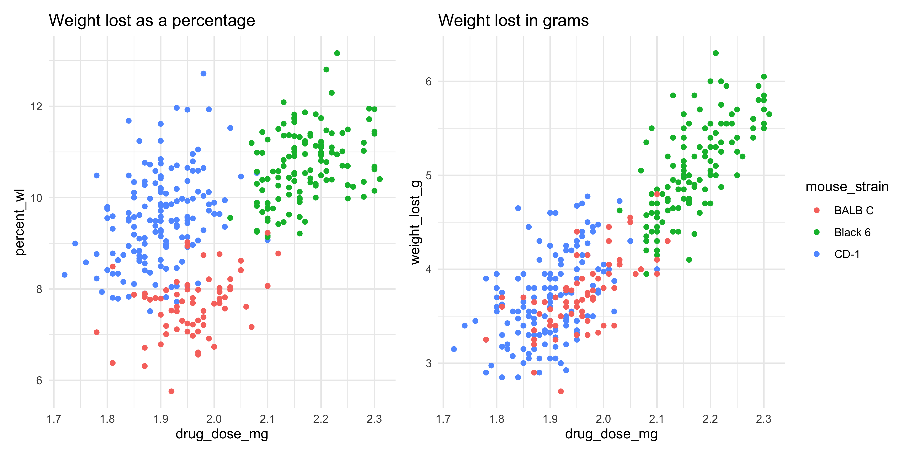
The two plots actually look quite different! While the BALB C and CD-1 mice lost a similar amount of grams when given similar dosages of mousezempic, the CD-1 mice on average weigh less than the BALB C mice, so in terms of the percentage of body weight lost, they have lost more. How interesting!
Recall that in research question one, we also explored the effect of sex on the relationship. Try faceting the new scatterplot you created above by sex and see what happens… hint: to clearly see this new pattern, you might need to add a linear trendline with geom_smooth().
Solution
# we can use the data frame we created above (dosage_wl_percent)
dosage_wl_percent %>%
# although ggplot2 implicitly removes NA points, a facet will still
# be created for those mice whose sex is unknown (try commenting this)
# line out and seeing what happens! So we should remove NAs in the sex column.
filter(!is.na(sex)) %>%
# recall we can pipe data directly into ggplot(), just don't mix up your %>% and +
ggplot(aes(x = drug_dose_g, y = percent_wl, colour = mouse_strain)) +
geom_point() +
geom_smooth(method = "lm") +
facet_wrap(~sex) +
theme_minimal()`geom_smooth()` using formula = 'y ~ x'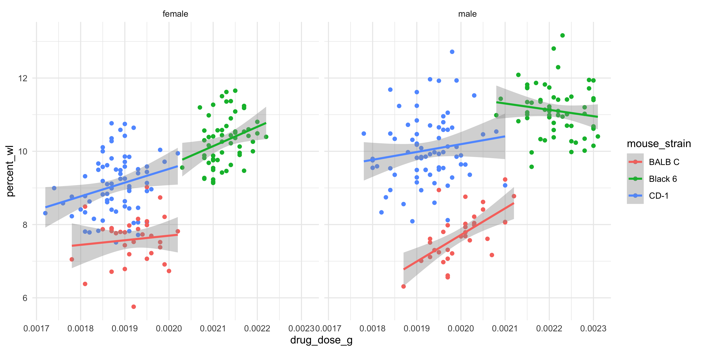
The trendlines for the male and female mice actually look quite different! Perhaps this is just an artefact of our relatively low sample size, but it might also be a true pattern in the data.
16.6.1.2 Practice question 2: normalising the gene expression data
Normalisation is a common step in many data analyses, as it allows us to more easily compare data across samples or experimental groups. For example, if we were to plot the expression of all genes across the three replicates:
genes_tidy %>%
ggplot(aes(x = replicate, y = expression)) +
geom_boxplot() +
theme_minimal()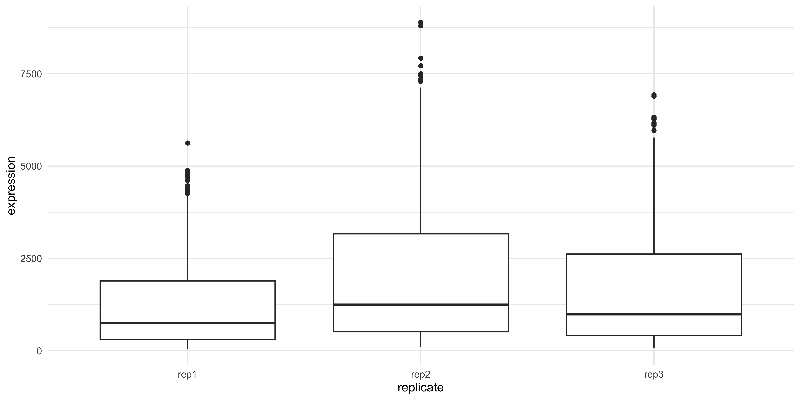
We can see that replicate 2 has higher expression on average compared to replicates 1 and 3. This might skew our results if we don’t correct for it.
There are many different ways to normalise data, depending on the type, but for the sake of this question we’ll:
- Calculate the average HPRT1 expression in each replicate
- Divide all TH and PRLH measurements by the average HPRT1 expression calculated above
Take a moment to think about how you could achieve this, and whether it would work better on the wide or long form of the genes data frame.
Solution
It would be much easier to do with the wide form data! That’s because each individual replicate/gene measurement is split into its own column, and in general, when using the mutate function (which is what we would need to create a new column of the normalised data) we want to work on columns. This will be a great practice of our pivoting skills, turning the genes_tidy data into wide format, performing the calculation and then pivoting it back to long format for plotting.
Keep this in mind for your own analysis, while plotting is usually easier in long format, some types of data analysis/manipulation are easier in wide format. You can change between them as it suits you!
ImportantNormalising the gene expression values
Our first task is to pivot the data into wide format. To help you do this, take a look at the genes_tidy data frame, and think about what columns exist and what new ones we need to create:
genes_tidy# A tibble: 3,087 × 5
group id_num gene replicate expression
<chr> <dbl> <chr> <chr> <dbl>
1 grp_treatment 1 Th rep1 3239.
2 grp_treatment 1 Th rep2 5964.
3 grp_treatment 1 Th rep3 4123.
4 grp_treatment 1 Prlh rep1 225.
5 grp_treatment 1 Prlh rep2 359.
6 grp_treatment 1 Prlh rep3 314.
7 grp_treatment 1 Hprt1 rep1 858.
8 grp_treatment 1 Hprt1 rep2 1292.
9 grp_treatment 1 Hprt1 rep3 988.
10 grp_treatment 2 Th rep1 2665.
# ℹ 3,077 more rowsCheck the out the pivoting section above (Section 10.6.1) if you need a refresher on pivoting!
Solution
To do the calculation outlined above, it would be handy if each replicate of each gene was in its own column. So, our column names should come from the ‘gene’ and ‘replicate columns’ (i.e. the names_from argument should be equal to c(gene, replicate)). Inside these columns should be the gene expression values, so the values_from argument should be ‘expression’
genes_tidy %>%
pivot_wider(
# create new columns based on the genes and the replicates
names_from = c(gene, replicate),
# the values in these columns should be gene expression
values_from = expression)# A tibble: 343 × 11
group id_num Th_rep1 Th_rep2 Th_rep3 Prlh_rep1 Prlh_rep2 Prlh_rep3 Hprt1_rep1
<chr> <dbl> <dbl> <dbl> <dbl> <dbl> <dbl> <dbl> <dbl>
1 grp_… 1 3239. 5964. 4123. 225. 359. 314. 858.
2 grp_… 2 2665. 4867. 4240. 253. 460. 358. 709.
3 grp_… 3 1536. 2501. 2054. 367. 552. 448. 975.
4 grp_… 4 2732. 4800. 3981. 258. 411. 339. 725.
5 grp_… 5 2384. 3460. 3115. 347. 651. 491. 896.
6 grp_… 6 2972. 4880. 4028. 303. 456. 377. 865.
7 grp_… 7 1936. 3666. 2964. 302. 441. 355. 625.
8 grp_… 8 2801. 4977. 3795. 246. 424. 321. 856.
9 grp_… 9 3239. 5198. 3930. 385. 654. 508. 623.
10 grp_… 10 2665. 3820. 2958. 230. 391. 301. 740.
# ℹ 333 more rows
# ℹ 2 more variables: Hprt1_rep2 <dbl>, Hprt1_rep3 <dbl>Now that the data is in wide format, we can create the normalised columns:
Solution
We create new normalised columns that are calculated by dividing the regular column by the mean of HPRT expression in that replicate:
# save in a variable so we can use for plotting later
normalised_data <- genes_tidy %>%
# first pivot
pivot_wider(
names_from = c(gene, replicate),
values_from = expression) %>%
# then mutate. recall we need to find the average HPRT expression
# and then divide the other genes by that
mutate(
Th_rep1_norm = Th_rep1 / mean(Hprt1_rep1),
Prlh_rep1_norm = Prlh_rep1 / mean(Hprt1_rep1),
Th_rep2_norm = Th_rep2 / mean(Hprt1_rep2),
Prlh_rep2_norm = Prlh_rep2 / mean(Hprt1_rep2),
Th_rep3_norm = Th_rep3 / mean(Hprt1_rep3),
Prlh_rep3_norm = Prlh_rep3 / mean(Hprt1_rep3)
)Now that we’ve normalised the data, let’s revist our second research question: does mousezempic change gene expression?
ImportantDoes normalising the data affect the relationship between mousezempic and gene expression?
First, we need to take the wide data frame we created above and pivot it into a long form that is suitable for plotting (hint: remove the non-normalised gene expression columns first with the select() function). Then, we can make the boxplot as above.
Solution
There are many different approaches we could use to pivot our normalised data into long format. Regardless of the approach, the first thing we need to do is to remove the non-normalised gene expression columns, because they will make it hard to pivot. Then, we need to pivot it longer, somehow separating the gene name and replicate into their own columns.
This can be done by using the separate function, as we learned earlier:
long_normalised_data <- normalised_data %>%
# remove the original expression values: we don't need them and they'll
# make pivoting difficult
select(group, id_num, contains("norm")) %>%
pivot_longer(
# pivot all columns containing the string 'norm'
cols = contains("norm"),
names_to = "measurement",
values_to = "rel_expression") %>%
separate(
measurement,
# NA tells the separate function to discard the last bit ('norm')
# you don't need to use it, but it's better to explicitly write that
# you want to exclude that portion
into = c("gene", "replicate", NA),
sep = "_")Here’s a slightly more advanced way to do this, using the names_sep argument of pivot_longer() to separate the column names by underscore and place each part in its own column (so we can split up the gene name and replicate, without needing to use the separate()) function:
normalised_data %>%
# remove the original expression values: we don't need them and they'll
# make pivoting difficult
select(group, id_num, contains("norm")) %>%
pivot_longer(
# pivot all columns containing the string 'norm'
cols = contains("norm"),
# the first part of the column name is the gene, the second is the replicate
# and the final part is just 'norm' to indicate its normalised. this is redundant
# so we can use NA to tell dplyr to discard it
names_to = c("gene", "replicate", NA),
names_sep = "_"
)# A tibble: 2,058 × 5
group id_num gene replicate value
<chr> <dbl> <chr> <chr> <dbl>
1 grp_treatment 1 Th rep1 4.29
2 grp_treatment 1 Prlh rep1 0.299
3 grp_treatment 1 Th rep2 4.74
4 grp_treatment 1 Prlh rep2 0.285
5 grp_treatment 1 Th rep3 4.11
6 grp_treatment 1 Prlh rep3 0.313
7 grp_treatment 2 Th rep1 3.53
8 grp_treatment 2 Prlh rep1 0.335
9 grp_treatment 2 Th rep2 3.87
10 grp_treatment 2 Prlh rep2 0.366
# ℹ 2,048 more rowsOnce the data is pivoted, it can then be plotted:
long_normalised_data %>%
# as before, we'll use the str_remove function to clean up the
# treatment/control labels on our plot
mutate(group = str_remove(group, "grp_")) %>%
ggplot(aes(x = group, y = rel_expression)) +
geom_boxplot() +
facet_wrap(~ gene, scales = "free") +
theme_bw() +
# add the other labels
labs(
title = "Effect of mousezempic on gene expression",
x = "Group",
y = "Expression (arbitrary units, relative to housekeeping gene)")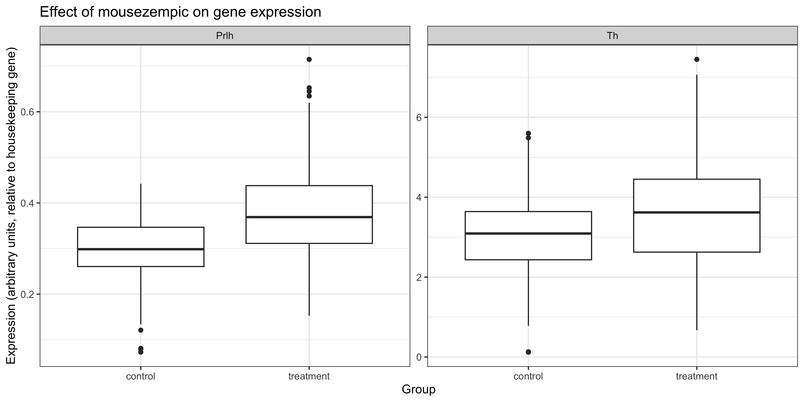
It looks like the shift in gene expression in mice taking mousezempic remains even after normalisation of the data. However, some of the outliers have now disappeared which makes the boxplot look a bit cleaner.